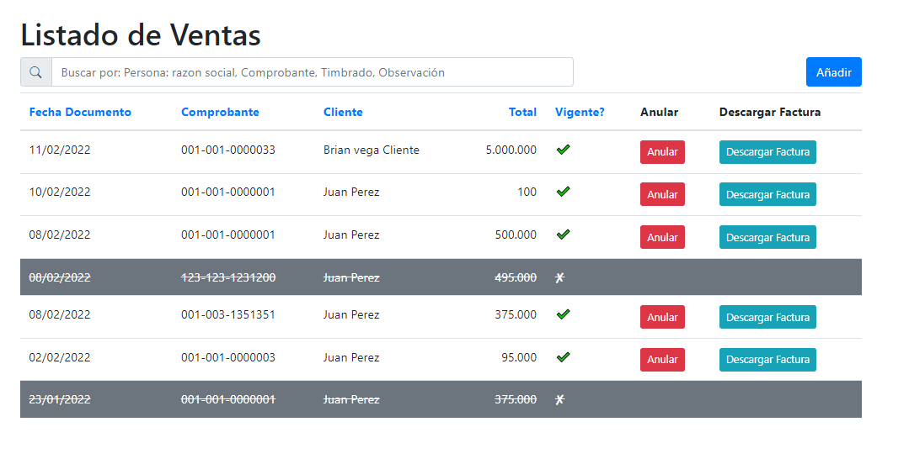
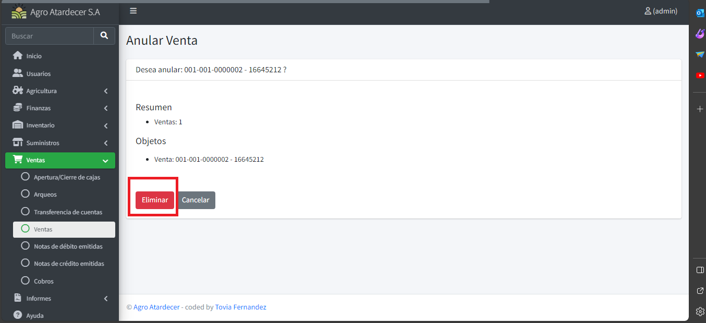
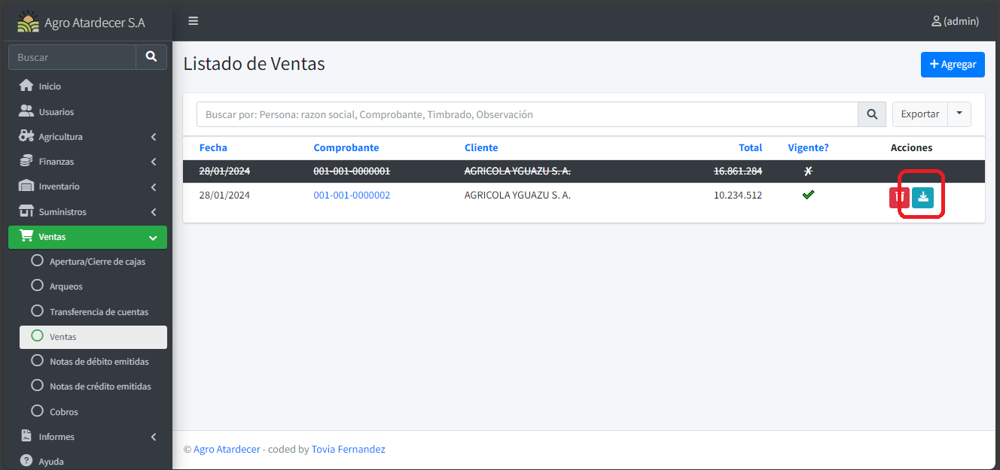
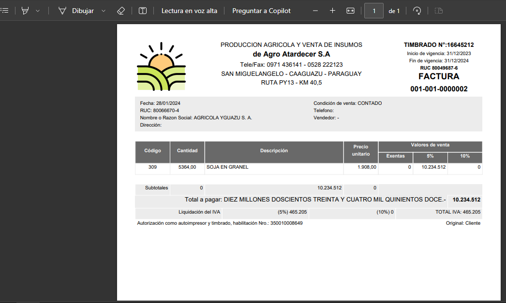
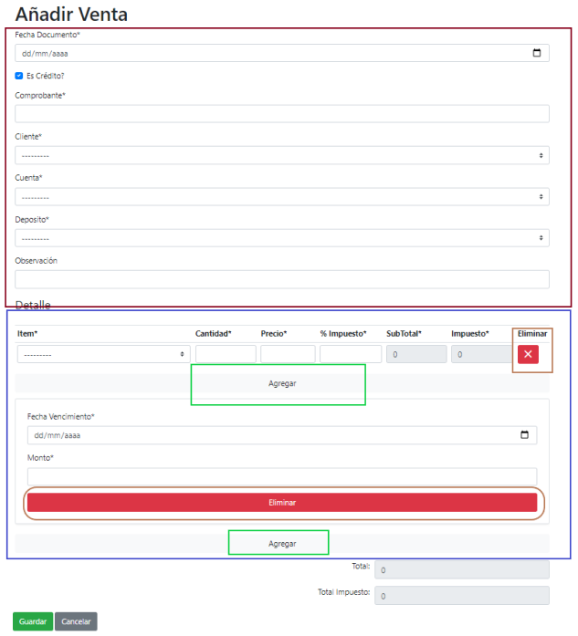
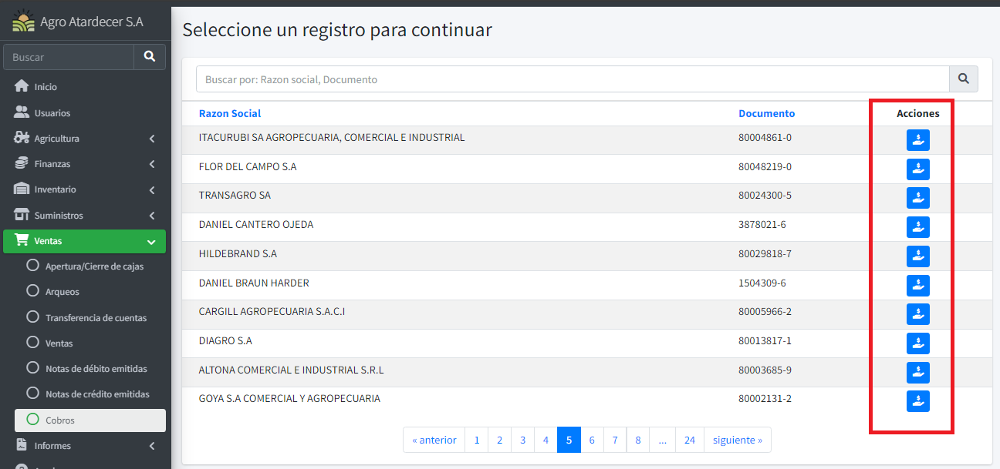
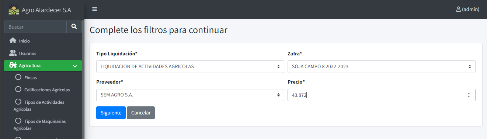

Funciones Movimientos
A demás de lo aprendido para los formularios de movimientos, para esta opción la pantalla de listado sería muy parecido, a excepción de nuevas funciones y opciones.
Info
En este caso, tomaremos el formulario de Venta como ejemplo
Listado Base
Como podemos ver en la imagen se añaden nuevas funcionalidades nuevas propias del formulario.
Info
Los registro tachados y pintados en color gris, significan que están Anulados.

Anular Movimientos
Oprimimos el botón de anular, y nos arrojara a una ventana parecida a la de eliminación
Procedemos a oprimir en el botón rojo para anular la venta en este caso.

Descarga de Comprobante
En algunos movimientos, el sistema tiene la opción para descargar un comprobante, procedemos a oprimir el botón de ´Descargar Factura´

Al oprimir dicho botón, se descargará un archivo en su directorio local.

Registrar Movimiento
Info
-
Apartado enmarcado en rojo (Información de cabecera del movimiento)
-
Apartado enmarcado en azul (detalles del movimiento)
-
Apartado enmarcado en naranja (opción de eliminado de detalle)
-
Apartado enmarcado en verde (opción de añadir nuevo detalle)

Una vez cargado toda la información necesaria y haber pasado las diferentes validaciones del sistema, se procede a guardar la información cargada.
Pre Selección de Carga
Algunos formularios de Movimientos: Cobro, Cierre de Zafra y Liquidaciones Agrícolas; poseen una pequeña ventana de selección antes de registra el movimiento.
Info
-
Para este caso utilizaremos el formulario de Cobro.
-
Una vez oprimido el botón de añadir visualizaremos una ventana de selección.
Procedemos a seleccionar el deseado y ya estaremos registrando el movimiento

Una vez seleccionado, se precargará las informaciones correspondientes a la selección prueba que realizó el usuario.
Otro tipo es el del formulario de Liquidación Agrícola.
Se procede a completar y ya visualizaremos el formulario de movimiento.
